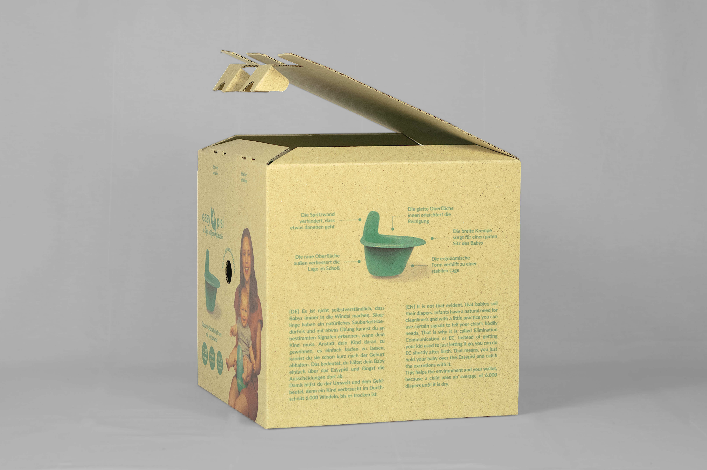
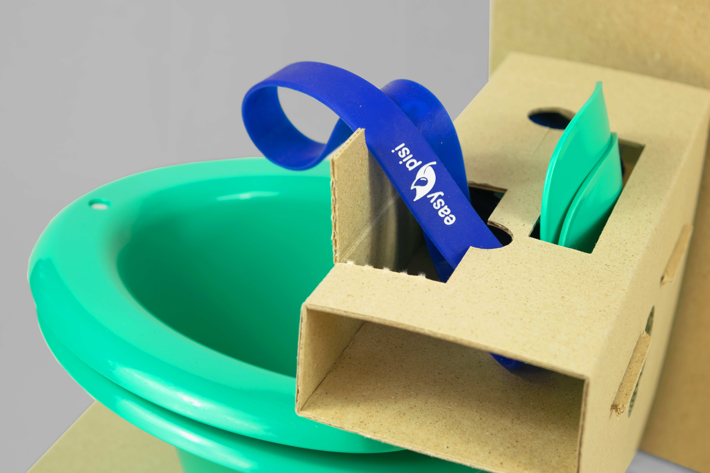

- In Kooperation mit der Start-up-Marke Easypisi habe ich eine Verpackung konstruiert und gestaltet, die sowohl für den stationären Verkauf als auch Versand geeignet ist.
- Herausforderungen
- Der Versand und die stationäre Präsentation stellen unterschiedliche Anforderungen an die Verpackung. Die Herausforderung lag darin, eine Verpackung zu konstruieren, die stabil genug für den Versand ist, jedoch nicht als "overpacked" für den Vor-Ort-Verkauf gilt.
- Lösungsansatz
- Gewählt wurde ein Standard-Faltkarton nach FEFCO 0216 mit einem Originalitätsverschluss durch Schließzungen. Hierdurch werden Klebstoff und Klebestreifen redundant. Ein passgenauer Inlay aus Wellpappe verhindert das Bewegen und Verkratzen des Töpfchens im Karton und ermöglicht eine sortierte Verstauung von Zusatzprodukten.
- Auftrag Konstruktion und Gestaltung einer Verpackung für ein Abhaltetöpfchen
- Kunde Shells & Trees - Schels und Tresowski GbR
- Entstehung Studentische Einzelarbeit
- Datum März 2022




